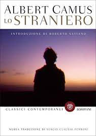
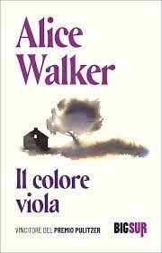
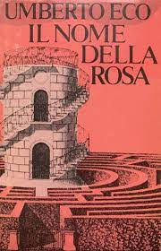
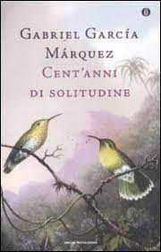

"Il Leone, la Strega e l'Armadio" è il primo libro della serie "Le Cronache di Narnia" di C.S. Lewis. Narra le avventure di quattro fratelli - Peter, Susan, Edmund e Lucy Pevensie - che, durante la seconda guerra mondiale, scoprono un mondo magico chiamato Narnia, raggiungibile attraverso un armadio incantato nella casa di campagna dello zio.

"Lo straniero" di Albert Camus segue la storia di Meursault, un uomo apatico e distaccato, che affronta la vita con indifferenza e fatalismo. Dopo aver ucciso un uomo senza motivo apparente, Meursault viene processato e condannato, ma sembra accettare il suo destino senza rimorso o emozione. Il romanzo esplora temi di estraneità, assurdità, e l'indifferenza dell'universo nei confronti dell'individuo.

"Il colore viola" di Alice Walker segue la vita di Celie, una donna afroamericana nel sud degli Stati Uniti nel corso di diverse decadi. Attraverso una serie di lettere, Celie esprime le sue esperienze di abusi, oppressione e discriminazione, ma trova forza e libertà attraverso le relazioni con altre donne e la sua ricerca di autoidentità e indipendenza.
"Il Maestro e Margherita" di Michail Bulgakov è una storia intricata che mescola la realtà e il soprannaturale a Mosca negli anni '30. Il romanzo segue le vicende del "Maestro", un autore tormentato, e della sua amante Margherita, insieme a una serie di personaggi stravaganti, tra cui il Diavolo in persona.

"Il nome della rosa" di Umberto Eco è ambientato in un'abbazia medievale, dove il frate francescano Guglielmo di Baskerville e il suo novizio Adso indagano su una serie di misteriosi omicidi. Attraverso indagini, enigmi e intrighi politici, Guglielmo svela segreti oscuri e conflitti religiosi, mentre la storia esplora temi di conoscenza, fede e potere.

"Cent'anni di solitudine" di Gabriel García Márquez narra la saga della famiglia Buendía attraverso sette generazioni in Macondo, una città immaginaria. Il romanzo esplora il ciclo della vita, dell'amore, della guerra e della morte, mescolando il reale e il fantastico in una narrazione magica e coinvolgente.